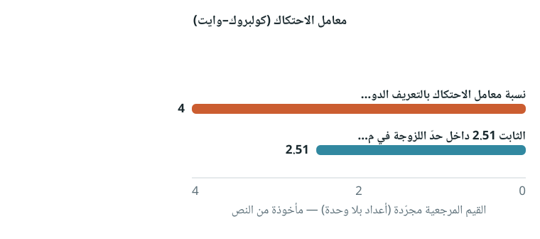

معامل الاحتكاك (كولبروك–وايت)
Colebrook–White Friction Factor
معامل لا بُعدي في معادلة دارسي–فايسباخ يُحسب من رقم رينولدز والخشونة النسبية؛ معادلة كولبروك تعطيه ضمنيًّا فيُحلّ بالتكرار، وهي المرجع الذي بُنيت عليه مخططات مودي.
كل حساب هبوط ضغط في أنبوب يحتاج معامل احتكاك λ: غالبية الخسارة تُكتب λ (L/d) (ρU²/2). والمعامل ليس ثابتًا، فهو تابع لرقم رينولدز Re وللخشونة النسبية k/dh. في الجريان الصفحي يعطيه حلٌّ صريح λ = 64/Re. وفي الجريان المضطرب لا يوجد حلّ صريح دقيق، فمعادلة كولبروك–وايت تضعه على طرفَي المعادلة فتُحلّ بالتكرار أو تُقرأ من مخطط مودي. وأهم ما فيها أن الحدّ الثاني يُمثّل الخشونة، والحدّ الأول يُمثّل لزوجة المائع؛ ففي الأنابيب الملساء عند رينولدز منخفض يغلب حدّ اللزوجة، وفي الخشن عند رينولدز عالٍ يغلب حدّ الخشونة ويصير λ مستقلًّا تقريبًا عن Re فتتقارب المنحنيات أفقًا. ولهذا لا معنى لسؤال «ما معامل احتكاك أنبوب حديد؟» من دون تحديد القطر والسرعة: الخشونة النسبية هي التي تدخل، وكذلك رقم رينولدز.
كيف تعمل الظاهرة؟
في الجريان المضطرب تنشأ طبقة حَدّية لزجة قريبة من الجدار، فوقها منطقة مضطربة. فإن كانت نتوءات الخشونة أصغر من الطبقة اللزجة غرقت فيها ولم تُحدث اضطرابًا إضافيًّا فسلك الأنبوب سلوك الملساء؛ وإن كانت أكبر اخترقتها فولّدت اضطرابًا موضعيًّا يزيد إجهاد القص الجداري. هذا التنازع بين سماكة الطبقة اللزجة (تنقص بارتفاع رينولدز) وحجم النتوءات (ثابت) هو سبب انتقال المنحنيات من اعتماد على رينولدز إلى اعتماد على الخشونة وحدها.
العلاقة بالأرقام
المعادلة كما ينشرها المصدر: 1/√λ = −2 log₁₀(2.51/(Re√λ) + (k/dh)/3.72)، وهي صالحة للجريان المضطرب وحده، ويجب حلّها بالتكرار لأن λ يظهر في الطرفين. ويُقرأ من مخطط مودي في النطاق العابر 2300<Re<4000 تنبيه صريح بأن المعامل لا يُحدَّد بثبات، وأن الاستقراء يجري بين قيمة الجريان الصفحي عند 2300 وقيمة المضطرب عند 4000. وفي المثال المنشور: k = 0.0015×10⁻³ م و dh = 0.01 م يعطيان خشونة نسبية 0.00015، ومع Re = 10⁷ يُقرأ λ نحو 0.013.
مفاهيم متقاربة
أكثر خطأ يقع في التطبيق هو استخدام λ في صيغة فانّنغ أو f في صيغة دارسي بلا ضبط معامل 4. والثاني هو إدخال الخشونة المطلقة في المعادلة بدل النسبة: إدخال 0.045 مم كرقم مباشر في حدّ k/dh يُنتج معاملًا باطلًا. والثالث هو الحساب في النطاق العابر بلا تصريح، فيخرج رقم يبدو دقيقًا وهو في الحقيقة منطقة لا تُحدَّد فيها القيمة. والرابع إغفال أن λ يشمل الخسارة الموزّعة فقط، فالصمامات والانحناءات لها K منفصل.
حدود التطبيق
المعادلة تجريبية لمضطرب أنابيب دائرية، وتنحرف في المقاطع غير الدائرية وفي القنوات الخشنة جدًّا حيث تصير الخشونة النسبية كبيرة، وفي الأنابيب المموّجة أو المرنة. كما أنها لا تصلح للجريان الصفحي ولا للنطاق العابر. والخسارة الكلية في الشبكة تحتاج معها معاملات الموضعية K، وتُضاف لا تُضرب. وأخيرًا فإن الخشونة تتغيّر بالتشغيل: تكلّس، وتآكل، ورواسب بيولوجية، فالرقم الجديد للماسورة النظيفة يقلّ عن الواقع بعد سنوات.

| الكمية | القيمة | المصدر |
|---|---|---|
| معامل الاحتكاك المقروء من مخطط مودي للمثال المنشور (خشونة نسبية 0.00015 · Re = 10⁷) | 0.013 — | [2] |
| الخشونة النسبية المحسوبة في المثال نفسه (k/d_h) | 0.00015 — | [2] |
| نسبة معامل الاحتكاك بالتعريف الدولي إلى التعريف الإمبراطوري | 4 — | [2] |
| الحدّ الأدنى لرقم رينولدز الذي يُعدّ بعده الجريان مضطربًا في مخطط مودي المرجعي | 4000 — | [2] |
| الثابت 2.51 داخل حدّ اللزوجة في معادلة كولبروك (مع 3.72 في حدّ الخشونة) | 2.51 — | [1] |
المصادر
- 1 Colebrook Equation — The Engineering ToolBox. www.engineeringtoolbox.com/colebrook-equation-d_1031.html · اطُّلع عليه 2026-11-28
- 2 Moody Diagram — The Engineering ToolBox. www.engineeringtoolbox.com/moody-diagram-d_618.html · اطُّلع عليه 2026-11-28
استشهد بهذا المصطلح
الصيغتان مبنيتان من بيانات الصفحة نفسها: العنوان والتاريخ ورابط النسخة المنشورة.
معامل الاحتكاك (كولبروك–وايت) — Colebrook–White Friction Factor. (2026). ديوان المعرفة — انفراد. https://infiradev.com/diwan/terms/term-friction-factor-colebrook.html
@misc{term-friction-factor-colebrook2026,
title = {معامل الاحتكاك (كولبروك–وايت)},
titleaddon = {Colebrook–White Friction Factor},
howpublished = {{ديوان المعرفة — انفراد} — مرجع علمي عربي},
year = {2026},
url = {https://infiradev.com/diwan/terms/term-friction-factor-colebrook.html},
urldate = {2026-11-28},
note = {مراجعة علمية: Abdullah Al-Huwaidi}
}
راجعه: Abdullah Al-Huwaidi · 2026-11-28 · آخر تحديث 2026-11-28